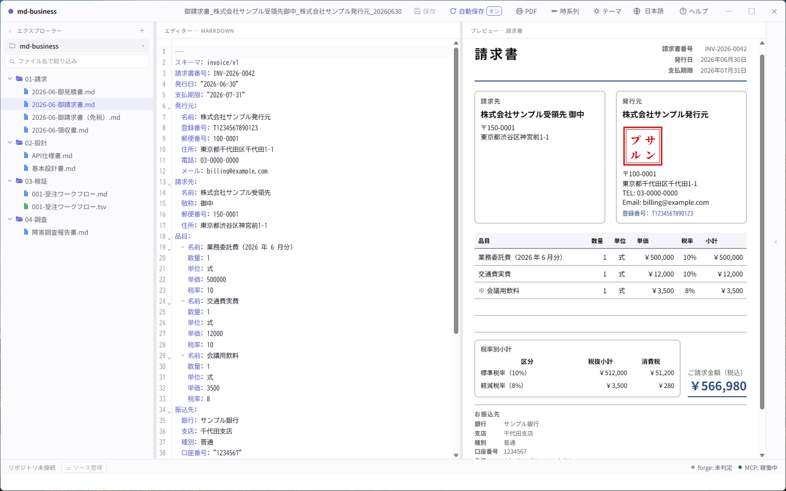
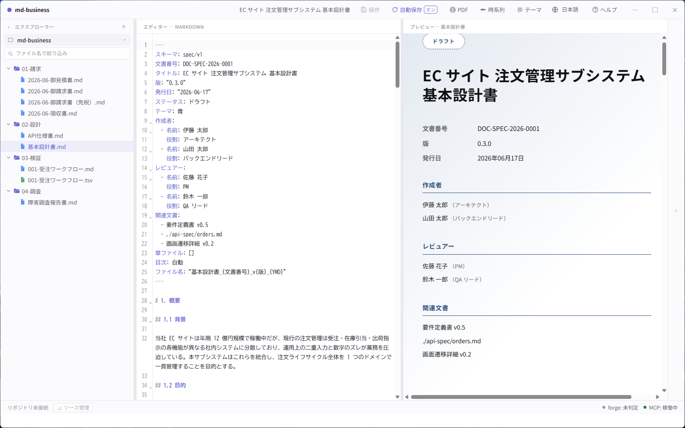
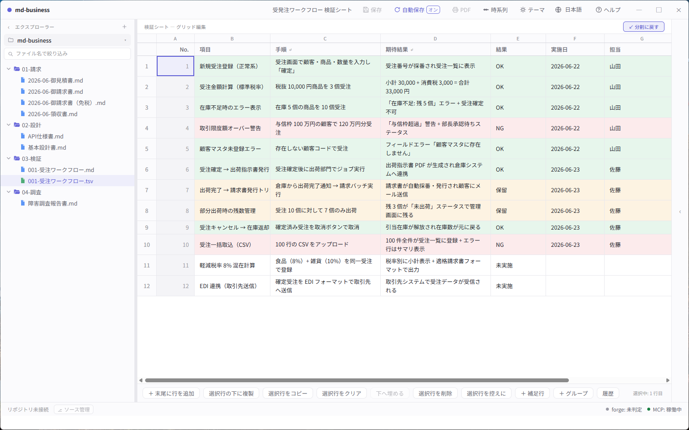
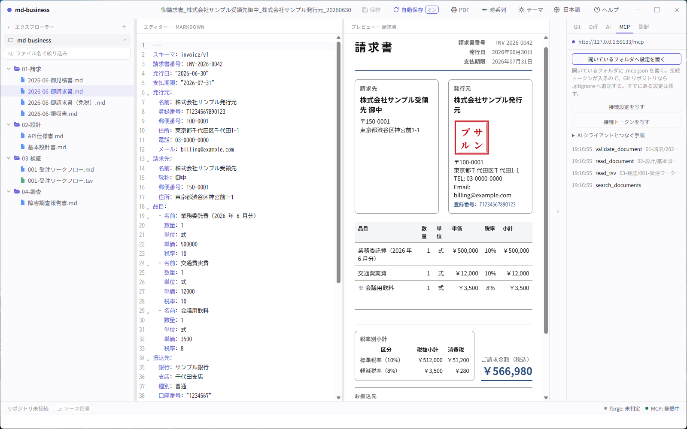
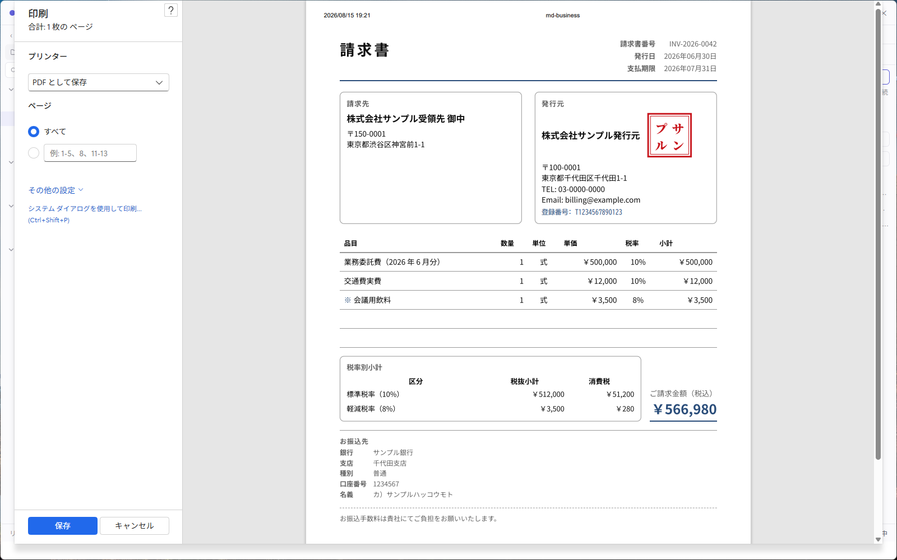

Why documents go stale
The design changes → the specification is a .docx on a shared drive →
the agent cannot open it → it guesses from the code → the document stops being true →
nobody opens it again.
Every part of the work has moved to text an agent can read — except the documents that say what the work is supposed to be. Word, Excel, PDF and most document SaaS hand an agent a binary blob, or an API with no diff. So the agent works from the code, and the document drifts away from it.
md-business is an open-source framework (MIT) that moves the source of truth to Markdown — invoices, test specifications, design documents, API specifications, database design documents — with structured YAML frontmatter and JSON Schema validation. It does not ask anyone to give up the format they review in: people read a PDF, a Google Sheet or a purpose-built viewer, while agents read, edit, validate and diff the same underlying file.
How it fits together
Markdown ← the source of truth. One file per document.
↓
JSON Schema validation ← a broken invoice fails before anyone signs it
↓
An agent edits it ← over MCP, in the folder you have open
↓
git diff / review / approval ← you see exactly which line changed
↓
PDF · Sheets · Chrome · desktop ← how people actually read itThe last row is the point. A document counts as reviewed only when a person reads it in a form they trust — an A4 invoice, a spreadsheet of test cases. Markdown underneath does not change that.
A look around the desktop app
What the app does, before you install anything.





These are captures of the app itself against a seeded, fictional workspace (scripts/demo-workspace), not mockups — no real company, registration number or bank account appears in them. The interface is shown in Japanese here; it also ships in English, 中文 and 한국어.
What you can write today
invoice stable
Japan-compliant qualified invoice (適格請求書) with registration number, per-rate tax breakdown, and totals filled in for you.
spec stable
Basic design specifications with structured sections for system overview, screens, data flow, and acceptance criteria.
test-spec stable
Test sheets as a grid, with pass / fail / on-hold per case and a round trip to Google Sheets.
api-spec planned
API endpoint specifications with request / response shapes and example payloads.
db-spec / nosql-db-spec planned
RDB and NoSQL schema design documents with field-level definitions and relationships.
How you read and edit them
Desktop app Windows / macOS
Standalone viewer and editor (Tauri 2 + SvelteKit). Purpose-built viewers for each document type,
live split-view editing, A4 PDF export, self-updating. A built-in MCP server lets an AI client
(Claude Code, Claude Desktop, Cursor, Cline, …) read and write the documents in the folder you
have open — copy the connection settings from the MCP tab and paste them once.
Download → Connect an AI assistant →
User guide →
Chrome extension published
Open a local .md in Chrome, preview it as a rendered business document, and export to A4 PDF.
Install from Chrome Web Store →
Google Workspace add-on under review
Edit test specifications and other Markdown business documents as a Google Sheet, then push the result
back to a GitHub repository as a single commit — same mental model as git push.
PWA viewer in development
Astro 5 + Lit web components viewer for browser-based preview without installation.
Renderer (Paged.js)
A4 print-quality PDF generation from Markdown source via Paged.js.
Better with zumen
zumen — diagrams the AI draws, you fix, and your fix survives
An architecture-diagram editor whose source of truth is text. Fix one spot in a diagram an AI drew, and the next time the AI redraws it, your fix is still there. It has an MCP server, so an agent can draw directly.
Same idea, so they fit together. md-business keeps documents, zumen keeps diagrams — both as text that people and AI edit in place. The design document lives in md-business, the architecture diagram inside it in zumen, and neither ends up in a separate binary format: you diff both in the same repository.
Write the diagram inside the design document, as text. Put a ```zumen fence in the body and it
renders as a diagram in the preview, the PDF, and the HTML and image exports. When the system changes, you edit
the fence — no redrawing and re-pasting. Connect an agent to both MCP servers and it can fix the diagram while
it fixes the document.
```zumen fences arrive with the next desktop release.
Not there yet
- api-spec and db-spec are not implemented. If those are the documents you need, this is not ready for you yet.
- The Google Workspace add-on is still under review, so the Sheets round trip cannot be installed from the Marketplace.
- The schemas are Japan-first. The invoice follows the Japanese qualified-invoice rules; other tax regimes are not modelled.
- There is no server and no account. Files stay on your disk and in your Git repository. That is deliberate — but it also means there is nothing to share a document from except the repository itself.
More
- Download the desktop app
- User guide (English) · 操作マニュアル（日本語）
- Source, issues and releases
- README (English) · README (日本語)
- Report a problem
- zumen — the diagram tool behind the
zumenblocks - Privacy policy · License (MIT)